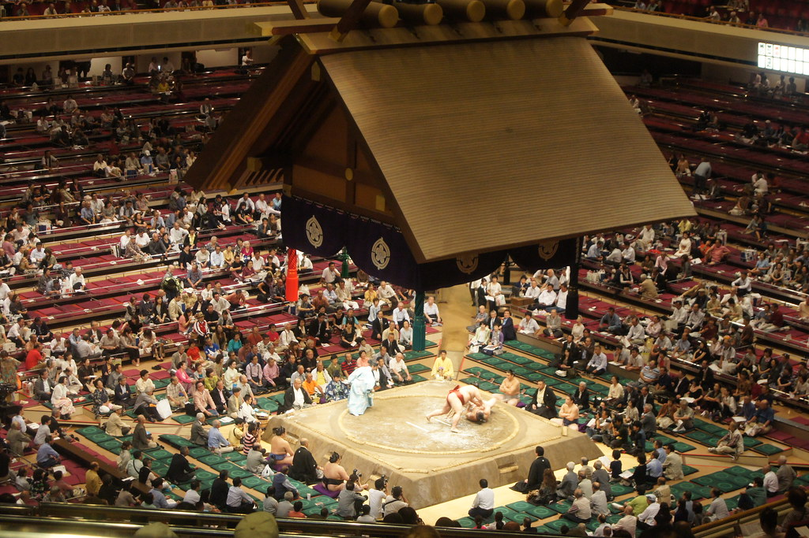

Sumo
There are six official sumo tournaments held in Tokyo every year, three of which are held at the Ryoguku Kokugikan. The three Grand Sumo Tournaments that are held in Tokyo take 15 days each and are held in the months January, May and September. If you are looking to watch at a less busy time you should avoid openings, closings and weekends.